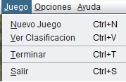
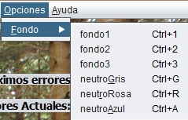
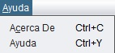

| Contenidos Ayuda / Opciones de Menu | ||
|---|---|---|
|
Este sera el menu de la aplicación desde él podremos controlar las diferentes opciones del juego. Que veremos a continuación: |
||
|  |
La primera opción del menu, es la opción Juego, en ella tendremos cuatro opciones:
* Opción Nuevo Juego: Esta opción nos sirve para inicializar el jeugo e introducir nuestro nombre. * Opción Ver Clasificación: Muestra el nombre y las puntuaciones de los jugadores. * Opción Terminar: Esta opción es para finalizar el jeugo mientras estamos con una palabra. * Opción Salir: Cierra la aplicación. |
|
|  |
La segunda opción del menu, es la opción Opciones, en ella tendremos un subMenu Fondos:
En Este submenu tendremos seis opciones, tres fondos de imagenes y tres fondos neutros de color sencillos. |
|
|  |
La tercera opción del menu, es la opción Ayuda, en ella tendremos dos Opciones:
* Opción 1: Acerca de, donde se muestra información de la aplicación. * Opción 2: Ayuda, sería la forma de acceder a la ayuda en que nos encontramos. |
|
 |
Ayuda Aplicacion: El Ahorcado / Opciones de Menu |